Abstract
As increasing volumes of urban data are captured and become available, new opportunities arise for data-driven analysis that can lead to improvements in the lives of citizens through evidence-based decision making and policies. In this paper, we focus on a particularly important urban data set: taxi trips. Taxis are valuable sensors and information associated with taxi trips can provide unprecedented insight into many different aspects of city life, from economic activity and human behavior to mobility patterns. But analyzing these data presents many challenges. The data are complex, containing geographical and temporal components in addition to multiple variables associated with each trip. Consequently, it is hard to specify exploratory queries and to perform comparative analyses (e.g., compare different regions over time). This problem is compounded due to the size of the data—there are on average 500,000 taxi trips each day in NYC. We propose a new model that allows users to visually query taxi trips. Besides standard analytics queries, the model supports origin-destination queries that enable the study of mobility across the city. We show that this model is able to express a wide range of spatio-temporal queries, and it is also flexible in that not only can queries be composed but also different aggregations and visual representations can be applied, allowing users to explore and compare results. We have built a scalable system that implements this model which supports interactive response times; makes use of an adaptive level-of-detail rendering strategy to generate clutter-free visualization for large results; and shows hidden details to the users in a summary through the use of overlay heat maps. We present a series of case studies motivated by traffic engineers and economists that show how our model and system enable domain experts to perform tasks that were previously unattainable for them.
Index Terms Spatio-temporal queries; urban data; taxi movement data; visual exploration1 INTRODUCTION
For the first time in history, more than half of the world’s population lives in urban areas. Enabling cities to deliver services effectively, efficiently, and sustainably is among the most important undertakings in this century. While in the recent past, decision makers and social scientists faced significant constraints in obtaining the data needed to understand city dynamics and evaluate policies and practices, data are now abundant. Many cities have started to make a wide range of data sets available, see e.g., [24, 10, 7]. The challenge now is how to make sense of these data.
We examine one particularly important urban data set: taxi trips. In New York City, each day 13,000 taxis carry over one million passengers and make, on average, 500,000 trips—totaling over 170 million trips a year. Taxi trips are thus valuable sensors of city life. Consider the plot in Fig 2, which shows how the number of trips per day varies over 2011 and 2012. There is a lot of regularity: the plot lines are very similar for the two years. For example, on Thanksgiving, Christmas and New Year’s eve, there is a substantial drop in the number of trips. But the plot also shows some anomalies. There are big drops in August 2011 and October 2012, which correspond to hurricanes Irene and Sandy, respectively. Looking at the data at a finer grain, other interesting patterns emerge. The maps in Fig 2 show the density of taxis across Manhattan from 7am to 11am, on May 1st, 2011. From 8am to 10am, taxis disappear along 6th avenue, from Midtown to Downtown; and then, at 10am they reappear. As it turns out, during this period, the streets were closed to traffic for the Five Boro Bike Tour. As we discuss later, other useful information can be discovered by analyzing these data, from popular night spots and economically disadvantaged neighborhoods that are underserved by taxis, to mobility patterns across regions at different times and days (see Fig. 1).
 Fig 2. Taxis as sensors of city life. The plot on the top shows how the number of trips varies over 2011 and 2012. While some patterns are regular and appear on both years, some anomalies are clear, e.g., the drops in August 2011 (Hurricane Irene) and in October 2012 (Hurricane Sandy). In the bottom, we show pickups (blue) and dropoffs (orange) in Manhattan on May 1st from 7am to 11am. Notice that from 8-10am, there are virtually no trips along 6th Avenue, indicating the traffic was blocked.
Fig 2. Taxis as sensors of city life. The plot on the top shows how the number of trips varies over 2011 and 2012. While some patterns are regular and appear on both years, some anomalies are clear, e.g., the drops in August 2011 (Hurricane Irene) and in October 2012 (Hurricane Sandy). In the bottom, we show pickups (blue) and dropoffs (orange) in Manhattan on May 1st from 7am to 11am. Notice that from 8-10am, there are virtually no trips along 6th Avenue, indicating the traffic was blocked.
Like many urban data sets, taxi trips contain geographical and temporal components. In addition, they encode information about movement: a trip is associated with pickup and dropoff locations and times. A trip also contains other attributes including the taxi id, distance traveled, fare and tip amount, which enable, for example, the study of the economics of fare structure and optimal fleet size. Not surprisingly, exploring these data is challenging. We have carried out interviews with social scientists and engineers that have used this data set in their research to better understand their needs. Their analyses can be complex and have been greatly limited by the size of the data. Tools that are commonly used, including R, MatLab, Stata, ArcGIS and Excel, cannot handle large data sets. This prevents scientists from analyzing the whole data. Instead, they first select small slices and then load them into these tools for analysis. This process is both tedious and time consuming. Furthermore, while these tools support complex analysis, users must be familiar with the underlying languages. For example, in ArcGIS, users have to construct SQL-like queries, a task that is out of reach for scientists without database training.
To address these limitations, in this paper, we propose a new visual query model that supports complex spatio-temporal queries over origin-destination (OD) data. Users need not be experts in any textual query language: they can directly query the data using visual operations. We show that this model supports a wide range of queries, and in particular, the three classes of queries in Peuquet’s typology [29]: identify a set of objects at a given location and time; given a time and a set of objects, describe the locations occupied by the objects; and describe the times a set of objects occupied a given set of locations. This model also supports origin-destination queries that are needed to explore taxi movement. While visual languages have been proposed for spatio-temporal data and moving objects, they targeted a different kind of data—continuous data (i.e., complete trajectories), and made use of a pictorial language [18, 12]. Instead of requiring users to sketch queries, our model allows them to directly (and visually) manipulate the data. The ability to specify queries using graphical widgets and visualize their results was in part inspired by the seminal work by Ahlberg et al. [2] on dynamic queries. Our focus, however, is different: we aim to support the exploration of large, spatio-temporal OD data, and provide visualization services that are both usable and efficient. Another important feature of our model is that each query is associated with a set of trips. As a result, not only can queries be composed and refined, but also query results can be aggregated and different visual representations can be applied while still maintaining the spatial and temporal contexts. Query composition also enables the use of cross-filtered views [37], which is key in our model to support the query classes in Peuquet’s typology.
We have built TaxiVis, an analysis environment that implements this model. It combines a number of interaction capabilities that enable users to pose queries over all the dimensions of the data and flexibly explore the attributes associated with the taxi trips. Another important feature of the system is the ability to compare spatio-temporal slices through multiple coordinated views. Users can interactively compose and refine queries as well as generalize them by performing parameter sweeps. To deal with scalability, the system implements a number of strategies to support interactive response times and the rendering of a large number of graphical primitives on a map. As discussed in Sec 5, these include efficient data storage, and the use of adaptive level-ofdetail rendering to provide clutter-free visualization of the results.
We demonstrate the usefulness of our system through a series of case studies motivated by traffic engineers and economists whose needs have driven our design. These case studies show how our model (and system) enable domain experts to perform tasks that were previously unattainable for them.
2 RELATED WORK
Analyzing Taxi Data.
Recognizing the wealth of information that can be obtained from taxi data, recently, several efforts have focused on their analysis. Ge et al. [19] and Yuan et al. [39] proposed recommendation systems for taxi drivers to optimize the cost of finding passengers (and therefore reduce gas emission). Pan et al. [26] used pickup and dropoff information to classify location according to land use. Veloso et al. [35, 34] used taxi data to study human mobility in Lisbon. They explored patterns in distribution of pickup and dropoff locations and the association with the city context. Liang et al. [22]studied the taxi data from Beijing and reported that the displacement distribution of taxis follows a different distribution than the majority of human mobility data. Peng et al. [28] analyzed 1.58 million taxi trips in Shanghai, and through the use of modeling algorithms, they concluded that people travel on workdays mainly for three purposes: commuting between home and workplace, traveling from workplace to workplace, and others such as leisure activities. Liao et al. [23] designed a visual analytics system to detect anomalies in GPS streams produced by taxis. They produce a visualization of the stream, apply an anomaly detection model, and leverage the user interaction to incrementally improve their model. These works share an important requirement: the need to perform exploratory analyses. The visual query model and scalable system we propose have the potential to benefit such efforts by making it easier to carry out these analyses.
Visualizing Movement.
Movement data has recently received substantial attention in the visualization community (see [5] for a survey). Much of the work has focused on trajectory data, where the complete trace of the moving entities is recorded. In contrast, the data we consider (Sec. 3) is multi-variate OD data [38]: only the start and end positions are recorded, together with attributes associated with the movement. Techniques have also been devised to visualize OD data. Phan et al. [30] proposed a method to automatically generate flow maps that show the movement between two locations. Wood et al. [38] proposed OD maps, which encode trips as a set of spatially ordered small multiples to avoid occlusion effects that occur when flow maps are applied to a large number of trips. While these two techniques consider only space, Boyandin et al. [8] proposed Flowstrates, which takes both space and time into account. These techniques are orthogonal and could be combined with our model. For example, in addition to the plots currently supported by the data summary view of our system (Sec. 5), we could also display a Flowstrate visualization for users to explore the results of origin-destination queries.
Visual Data Selection and Queries.
Data selection is a fundamental task for querying and visualization. A number of approaches have been proposed to simplify this task. Ahlberg et al. [2] introduced the concept of dynamic queries, where queries are specified through graphical widgets. VIQING [25] allowed users to create selection queries by directly manipulating visualizations. Heer et al. [21] went a step further and proposed the use of query relaxation to interactively generalize selections. Our approach follows in the tradition of these systems: users can specify selections visually as well as explore the results through direct manipulation of visualizations; and they can also generalize queries. Shrinivasan and Van Wijk [32] proposed the creation of a Select & Slice table during an exploration process to help cross-tabulate semantic zones (i.e., user-defined data regions) and data subsets. Using these tables, users can manipulate zones and explore the relationship between zones and data slices. Another notable effort in this direction is the Polaris system [33] and its successor, Tableau. Polaris pioneered a visual model for users to specify queries and visualizations by dragging database column names onto shelves for visual variables. A distinguishing feature of our model is that the visual operations were designed to support spatio-temporal queries over OD data. Note that systems like Tableau were developed to manipulate tabular data, and thus, they can also support spatio-temporal queries over data stored in tables. However, specifying spatio-temporal selections and comparing them in these general systems can be challenging. Another difference between our model and Tableau’s is that the latter provides a visual interface for users to construct queries—it does not support direct querying over the visualized data.
Visual query models have been proposed for spatio-temporal data [16, 18, 12]. They infer queries from the topology of query sketches specified by the users. Like our model, these works aim to achieve expressiveness. However, they have important limitations that make them unsuitable for our problem. First, they were designed for continuous spatio-temporal data, i.e., when full trajectories are recorded. Second, their “dictionary” of visual representations is very complex—users need to master a number of logic operators and visual syntax, which negatively impacts usability.
3 DATA AND DESIGN REQUIREMENTS
The New York City Taxi Data.
The data used in our study was provided by Taxi and Limousine Commission of New York City and contains information about all medallion taxi trips in 2009, 2011, and 2012. The raw data came in CSV files with a total size of approximately 120 GB and contained over 540 million trips. Each trip record consists of: trip id, taxi id, driver id, pickup location, dropoff location, pickup date and time, dropoff date and time, traveled distance, fare amount, tip amount and toll amount. Taxi and driver ids were anonymized so as to avoid the linking of records to the actual taxi medallion and taxi driver’s license. Note that the trajectory of a trip is not recorded.
Desiderata for Visual Exploration.
We have conducted interviews with a total of five researchers from Economics and Traffic Engineering departments (2 engineers and 3 economists) from New York University to better understand the questions they want to investigate. We have identified different kinds of queries the experts want to perform. They are interested in understanding the dynamics of the city, how different aspects of the data vary over space and time. For example, “What is the average trip time from Midtown to the airports during weekdays?” or “How does the taxi fleet activity vary during weekdays?”. They also want to explore particular events at a given time such as “How was the taxi activity in Midtown affected during a presidential visit” or “How did the movement patterns change during hurricane Irene?”; and how patterns differ across different neighborhoods, for example “What is the frequency of taxis in Midtown and Harlem?”. As they explore the data, they need to freely mix these queries and drill down from a high-level summary to an individual event.
As in any longitudinal analysis, comparing different data slices is essential: how patterns vary across space and time, and at different scales. For example, “How the movement changes between Midtown and JFK throughout the day, and over different days of the week”. In addition, they need the ability to quickly test hypotheses. For example, starting with a query about a specific neighborhood (“What are the movement patterns between the Midtown and JFK?”) and then generalizing it to all neighborhoods in Manhattan.
Currently, the analyses carried out by the experts are mostly confirmatory. They use general-purpose analysis tools such as R, MatLab, Stata, Excel, and use basic filters and visual tools to verify their hypotheses. Since these tools have limited scalability, the experts must select a (small) subset of the data to analyze. As they identify patterns and explore hypotheses that need to be tested on other data slices, they need to go back to the raw data. Not only is this process tedious and error-prone, but it also prevents them from performing analyses over the whole data set, or even over a single year. Furthermore, it is hard to replicate the analyses, to apply an analysis over different data subsets, and to compare different data slices.
To address these limitations, an important goal of our work is to unify the two phases of exploration: data selection and visual analysis. We posit that by doing so, domain experts will be able to carry out both confirmatory and exploratory analyses over the complete taxi data set. Since these experts do not have computer science training, the system should be usable and not require knowledge of specialized programming or query languages. Simplicity must be balanced with expressiveness: the exploratory system has to be expressive enough to support spatio-temporal selection and analysis at different scales both in space and time, selections over the different trip parameters, and the ability to refine and generalize queries.
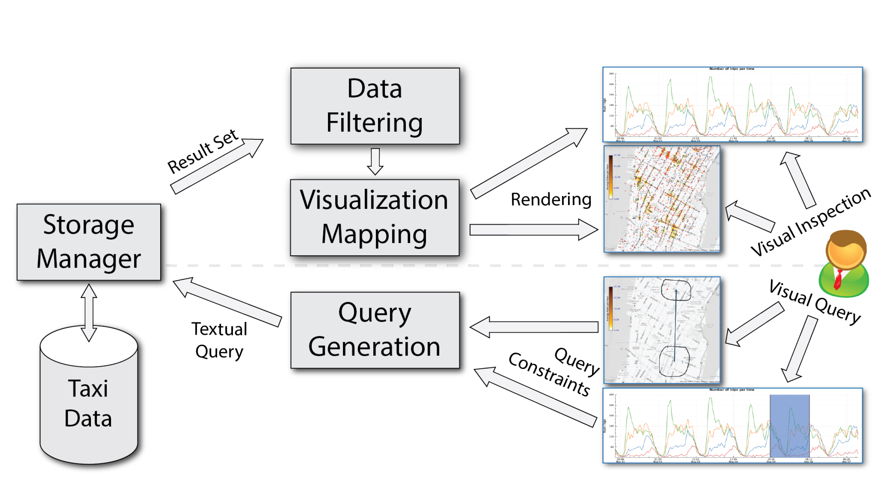 Fig. 3. High-level architecture of TaxiVis.Due to the large-scale of the data, the system should also support result summarization. Besides giving insights into the data, summaries can help guide the exploration, including hints about potentially useful query refinements. Furthermore, exploration must be flexible and allowing users to go back and forth from aggregated summaries to individual objects.
The TaxiVis System.
With these requirements in mind, we have built TaxiVis, a system for exploring large OD and spatio-temporal data. A key component of the system is a visual query model that is easy to use, yet expressive. As we discuss in Sec. 4, the system supports the query types defined in the Triad Framework [29]. The functional modules of the system are shown in Fig. 3. Users formulate queries visually, by interacting with maps and other visual representations. Internally, a textual query is generated which is then evaluated by the storage manager. To support spatio-temporal queries at interactive rates, we have built a specialized index based on k-d trees [11] (Sec. 5.4). Once the results are derived, the system renders them on the map and users can iteratively refine their queries through visual interactions. Since result sets can be large, we make use of adaptive level of detail and density heat maps. (Sec. 5.3). In order to create these visualizations, additional information such as trip frequencies, must be computed for each spatial region. TaxiVis makes use of data filters to generalize this process. In Sec. 5, we describe the system in more detail.
4 VISUAL QUERY MODEL
Based on the requirements set forth in Section 3, we have designed a visual query model that aims to achieve a balance between simplicity and expressiveness. Users specify queries visually and they can iteratively refine their queries through direct manipulation of the results. Below, we present the model and describe how it simplifies the selection of spatio-temporal slices, and enables both query composition and result exploration. We also discuss the different classes of queries it supports. Note that, while this model was designed for taxi trips, it can be applied to other similar OD and spatio-temporal data.
4.1 Defining and Composing Queries
A key challenge in formulating spatio-temporal queries is selecting(and refining) the data slices through query constraints. In our model, queries follow the following template:
SELECT * FROM trips
WHERE <constraints>
Instead of requiring users to write the constraints in the WHERE clause, they do so through visual operations. In our model, there are three types of constraints: spatial, temporal, and attribute constraints. These constraints span all the variables in the taxi dataset (in fact, any OD or spatio-temporal dataset). Furthermore, each query is associated with the set of trips contained in its results. Since each trip is uniquely identified by the trip id, queries can be composed: users can iteratively refine queries and further explore results. This has two important implications: it allows the creation of summaries and visualizations while maintaining the spatial and temporal contexts, and enables queries to be applied directly to the derived visualizations. To formalize the process of query composition and properly define query semantics, we use two types of queries: atomic and complex queries, which use atomic queries as building blocks.
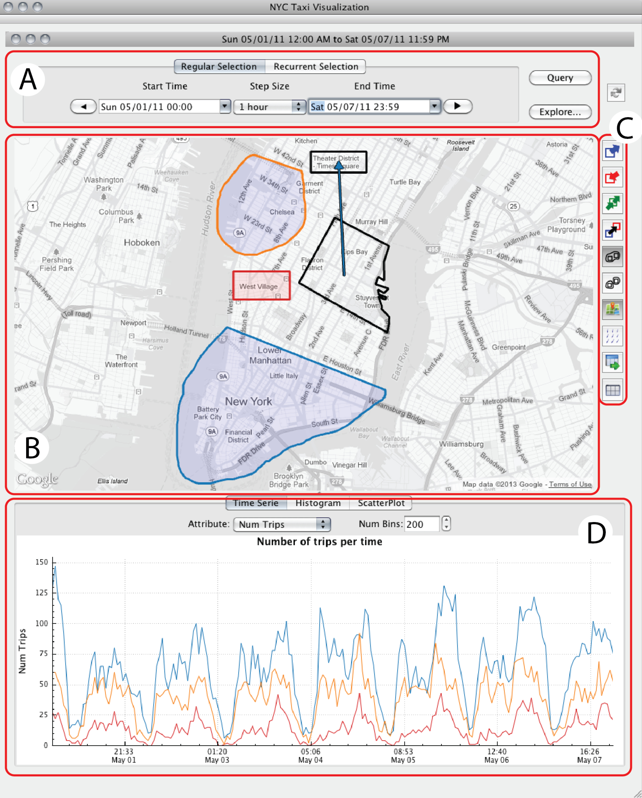 Fig. 4. TaxiVis user interface components. (A) Time selection widget, (B) Map, (C) Tool bar, and (D) Data summary. We can also see an example of three distinct queries specified by colors. The orange query (orange border polygon) represents an atomic query with a spatial single region start constraint. The red query (red border polygon) represents an atomic query with a spatial single region end constraint. The blue query is a complex query which is the union of two atomic queries: the polygon with blue border (atomic single region start constraint) and a directional query (blue arrow). Atomic Queries.An atomic query consists of a set of temporal, attribute and spatial constrains. Temporal constraints define intervals that bound the values of the time range of the query. A temporal constraint is specified by an interval [tMin,tMax]. A trip satisfies the constraint if trip.pickup_time,trip.dropoff_time ∈ [tMin,tMax]. It is also possible to have constraints that bound just the pickup or just the dropoff time.
An attribute constraint can be expressed using equality conditions (for categorical attributes) or interval conditions (for numerical attributes). A trip satisfies an attribute equality constraint associated with a categorical attribute A if for the given value a, trip.A = a. If the constraint is associated with a numerical attribute, the trip satisfies the constraint for the interval [lA,rA] if trip.A ∈ [lA,rA].
Spatial constraints come in two flavors: single-region and directional constraints. A single-region constraint is defined by a connected spatial region and is associated either with the pickup location (start constraint) or the dropoff location (destination constraint). A trip satisfies the constraint for region r if either trip.pickup_region ∈ r (for start constraints) or trip.dropoff_region ∈ r (for destination constraints). Directional constraints are used to construct queries about origins and destinations. A directional constraint bounds the regions associated with both pickup and dropoff locations. Given source and destination regions, rsource and rdest, respectively, a trip satisfies the constraint if trip.pickup location ∈ rsource and trip.dropoff location ∈ rdest .
We define a function called result which takes as input an atomic query and returns the set of all trip records that satisfy the query constraints. The result function determines how queries are evaluated. Atomic queries can be combined to construct new atomic queries. Given two atomic queries Q1,Q2, a new query Q3 can be constructed such that result(Q3) = result(Q1) ∩ result(Q2). This is possible due to a basic property of the query constraints: they are closed under intersection. This can be easily verified for interval and equality constraints, since both are closed under intersection; of course, intersections can be empty.
For spatial constraints, if they are of the same type (start and destination single regions, or directional constraints) or if one is a single region constraint and the other is a directional constraint, they can be combined into a single constraint by reducing (intersecting) the corresponding regions. Otherwise, one must be a single region start constraint and the other must be a single region destination constraint in which case both can be combined in a directional constraint. As we describe in Sec. 5, this forms the underpinning of the grouping operation in TaxiVis.
Complex Queries. A complex query is constructed by combining a set of atomic queries through disjunction. We give meaning to these queries by extending the result function inductively. Note that an atomic query is a special case of a complex query, where the query set has a single element. Then, given two complex queries, Q1 and Q2, result(Q1 ∪ Q2) = result(Q1) ∪ result(Q2). In general, given an atomic query Q it is not possible to find an atomic query Q´ such that result(Q´) = result(Q)C (the complement of result(Q)). However, it is always possible to define a complex query Q´ that satisfies this condition. Thus, set theoretic operations can be performed on the result of complex queries to build new complex queries.
Visual Representation. Fig. 4 illustrates how atomic and complex queries are visually represented in our system. Temporal constraints are specified using time-selection widgets (A), and attribute constraints are defined in a separate view (see Fig. 6). We describe both of these, as well as constraints defined within the tool bar (C), in Sec. 5. Here, to illustrate the semantics of the query model, we focus on spatial views which are defined on the map view (B). Singleregion constraints are defined by polygons and directional constraints are defined by arrows. The transparent color in the interior of the polygons define the type of the constraint: blue means start constraint, red means destination constraint (see Fig. 4). The colors on polygon borders and arrows identify distinct queries (there are 3 queries orange, red, and blue). The orange and red queries are atomic queries, consisting of only atomic temporal and spatial constraints. The blue query Q is a complex query, composed by the union of two atomic queries: a single-region start query Q1 and a directional query Q2. In SQL-like textual notation, Q1 can be represented as:
SELECT * FROM trips
WHERE trip.pickup_time ∈ [05⁄01⁄2011,05⁄07⁄2011] AND trip.pickup location ∈ R1
where R1 denotes the blue region selected in the map.
And Q2:
SELECT * FROM trips
WHERE trip.pickup_time,trip.dropoff_time ∈ [05⁄01⁄2011,05⁄07⁄2011]
AND trip.pickup_location ∈ NYCNeighborhood(’Gramercy’)
AND trip.dropoff_location ∈ NYCRegion(’Times Square’)
where NYCNeighborhood and NYCRegion are functions that given a neighborhood name or region name, respectively, returns the corresponding spatial region.
4.2 Exploring Query Results
As described above, atomic and complex queries return a set of trips. Thus, given a set of queries, such as the ones shown in Fig. 4, other queries can be applied to their results and different visual representation can be used to explore them. For example, in this figure, the plot below the map shows the number of trips returned by each query— the lines in plot are linked to the queries by their color. In Fig. 1, a scatter plot is used to examine the duration of trips to the airports at different times of the day. Other types of visual representations can be used, including, for example, representations that are specific for OD data [30, 38, 8]. As we discuss later, these visualizations can be directly manipulated to visually define attribute constraints and construct refined queries (see Fig. 6). Last but not least, through the use of multiple coordinated views, query results can be compared side by side.
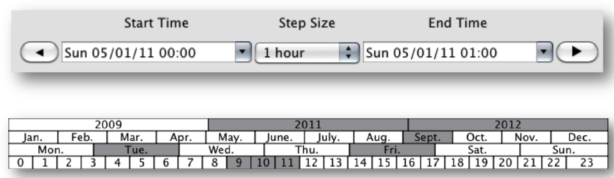 Fig. 5. Time selection widgets. The regular time selection widget (top) allows the user to define an atomic temporal constraint. The recurrent time selection widget (bottom) allows the user to easily define complex temporal constraints. In this figure, the widget selects for the years of 2011 and 2012, the period between 9AM and noon in all Tuesdays and Fridays in the month of September.4.3 Query Expressiveness
The proposed query model is able to express a rich class of queries. In particular, it supports queries types in Peuquet’s Triad Framework [29]. Peuquet considered the different components of spatiotemporal data—space (where), time (when) and objects (what), and classified the set of questions that are possible over these components. Below, we describe these questions and how they are supported in our model.
when + where → what. These queries describe objects that are present at a given location or set of locations at a given time or set of times. In our model, they can be constructed in a straightforward fashion, through the definition of spatial and time constraints.
when + what → where. Given a set of objects and a time or set of times, these queries return the location of the objects. This can be achieved by combining time and attribute constraints.
where + what → when. These queries return a time or a set of times when given object or set of objects occupied a given location or set of locations. They can be constructed by combining spatial and attribute constraints.
Although our initial goal was to support these three classes of queries, by having separate constraints, our model is able to express other types of queries, including when → what + where, where → when + what, and what → where + when, by simply defining a single type of constraint.
5 THE SYSTEM
In this section, we describe the system we built to support the interactive analysis of the taxi data. It combines the visual query model described above with other visual operations and representations to cater to the requirements set forth in Sec. 3.
5.1 User Interface Components
The main view of our system is shown in Fig. 4. Its components and their role in the system are described below.
Map. Maps serve different purposes in our system. They provide a canvas for displaying query results, for users to specify spatial constraints and compose/refine queries.
Time selection widget. This widget allows users to specify temporal constraints. As shown in Fig. 5, two widgets are available which we describe in Sec. 5.2.
Data summary view. The information associated with the results of a query can be visualized using different representations within the data summary view. For example, this view can display the selected trips as time series, histograms, and scatter plots over different attributes. Since our query model supports multiple sub-queries in a view (represented by different colors), visualization filters can distinguish their results. For example, plots can be generated where each line corresponds to one sub-query.
Tool bar. Several operations are supported through the tool bar. The first 3 buttons (from top to bottom) allow users to specify whether their queries should consider pickups, dropoff, or both. The fourth button supports the creation of directional queries. The group and ungroup (fifth and sixth) buttons provide a simple mechanism for users to combine (and split) both region-based and directional queries. The system can also export query results as a CSV file, which could then be analyzed using other tools. Lastly, the attribute exploration button provides a visual mechanism for users to define attribute constraints.
Multiple Coordinated Views. The view in Fig. 4 is used to specify a set of queries that share both time constraints and attribute constraints, but with different spatial constraints. By using multiple views the user can specify other queries with distinct time and attribute constraints (see Fig. 1). To enable comparison, these views can be synchronized to show the same spatial region and to synchronize the scale of the attribute summaries.
5.2 Visual Query Specification
Spatial constraints are specified by polygons and arrows on the map view. These are created either by brushing or by selecting predefined polygons corresponding to NYC’s neighborhoods, zip codes, and boroughs. In order to create a single-region spatial constraint, the user first chooses which parameter is associated with the selection to be created by selecting either start/end constraint button (via the toolbar) and through brushing, the user then creates an atomic spatial constraint. Selected regions can be moved, edited, and deleted. The user can also link two regions to form a directional constraint (Fig. 4). Atomic spatial constraints can be grouped to form complex ones. This is achieved by first selecting the regions and arrows to be grouped and then pressing on the merge button in the toolbar (see the blue query in Fig. 4).
Temporal constraints are specified using the time selection widgets: Regular Selection and Recurrent Selection (Fig. 5). In the Regular Selection widget, the user defines an atomic temporal constraint by assigning the values of the start time and end time fields. Using the Recurrent Selection widget, the user can specify complex constraints that cover different temporal scales, by selecting an arbitrary combination of years, months, days of the week, and hours. This widget is similar to the time wheel in the TEMPEST system [13].
Attribute constraints are defined through the attribute selection view, which is accessed through the exploration button in the toolbar. As illustrated in Fig. 6, this view shows histograms that summarize the attribute values for the trips in the result set of the query shown on the left. By brushing the desired values or value ranges (the dark gray rectangles), attribute constraints are derived and added to the original query. The result of the refined query is shown on the right.
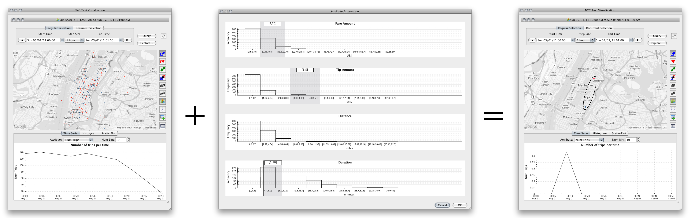 Fig. 6. Attribute constraints are specified (in the middle) to refine the query on the left. They are shown as dark gray strips on the histogram. The result of the refined query is shown on the right and consists of a single trip.5.3 Query Result Visualization
Rendering Trips on a Map. The spatial component of the query results is visualized in the map view. Fig. 7 illustrates alternative visualizations. A basic visual representation for this kind of data is a point cloud, where each trip is represented by a pair of points denoting their pickup and dropoff locations. The two points of a pair are differentiated by color: blue is for pickup and red is for dropoff. For a small number of trips, this visualization can quickly give us a sense of how the taxi activity is distributed throughout the city. However, as the number of trips increases, it gets cluttered very quickly, as shown in Fig. 5.3(a). This figure contains the points corresponding to all taxi trips in one week. The point cloud covers almost the entire map, making it hard for users to discern what is happening.
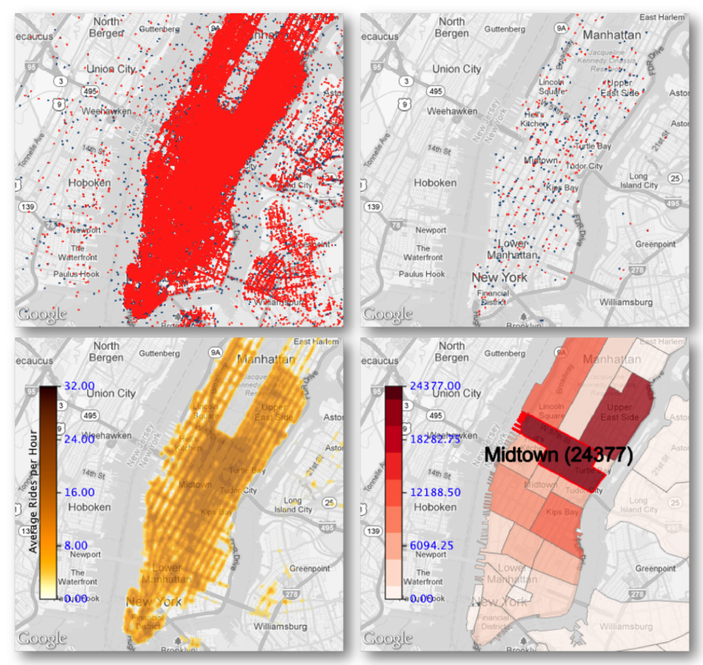 Fig. 7. Different spatial visualizations of taxi trips for the week 05/01/2011 to 05/07/2011. In (a) all the trips are rendered To reduce the clutter, TaxiVis uses both LOD (b) and density heat maps (c). The system also supports heat maps based on well-defined regions such as neighborhoods (d). For the latter, summary information about the region can be overlaid on the map, for example, hovering the mouse over a neighborhood highlights it and shows the number of trips.To address this issue, our we applied a set of techniques to provide alternative visualizations to the user. First, as shown in Fig. 5.3(b), we employ an adaptive level-of-detail (LOD) strategy to reduce the number of points rendered. Our LOD strategy works by first sorting all the points based on their spatial coordinates, i.e. their distance from the equator and prime meridian. We then build a binary tree on top of the sorted points and perform an in-order traversal to sort them again based on the visiting order. This is equivalent to building hierarchical indexing for regular grids on a Z-order curves [27]. In the end, all the points are arranged linearly in such a way that the first n elements are also a hierarchical subsampling of size n of the original point cloud. During user interaction, n will scale proportionally to the map zoom level with n=1e6 at the finest level. This is also the maximum number of points that our application would display even if the actual number of matched records is higher.
 Table 1. Summary of experiments with data storage strategies.
Table 1. Summary of experiments with data storage strategies.
Second, our system supports density summary visualizations or heat maps (see Fig. 5.3(c)) that can be used to show the distribution of pickups and/or dropoffs in an area. The tool buttons on the right of the user interface may also be used for selecting which location attribute (pickup, dropoff or both) is being used for constructing the heat maps. For example, if both pickup and dropoff locations are selected, both pickup and dropoff locations would be used for aggregation on each pixel of the heat map. Such heat map can help answer questions such as “How often do taxis travel to a particular neighborhood?”. Darker locations on a heat map indicate a higher level of activity in an area. Combined with the point cloud LOD, this is a powerful tool to quickly summarize the data.
Finally, we have also generalized the concepts of heat maps to apply to grid maps in our system. A grid map is a set of cells where their geometries and visual representations can be customized by the users. An example of this is a grid map of zip codes or neighborhoods in NYC showing the number of taxi pickups (see Fig. 5.3(d)). A heat map may also be considered as a grid map where its cells are points on a regular grid and its visual representations are just spherical gradient textures.
Visualizing and Interacting with Trip Data. Besides displaying query results on a map, filters can be applied to the results to derive different visual representations. In our current implementation, we provide support for visual representations that are suitable for the types of attributes associated with the trips. For example, time series, histograms, and scatter plots (see Fig. 4, Fig. 1, and Fig. 6). In addition, as we discussed in Sec. 5.2, these visualizations can be active and serve as a means to further refine queries.
5.4 Storage Manager
Supporting interactivity is an important requirement of our approach. Thus, performance was a key factor in the design of our system. We have experimented with several designs for data storage that can be run interactively on a single machine. In particular, we have evaluated two traditional database management systems, PostgreSQL and SQLite, with the latter being used for in-memory storage. Though both systems provide extensions for spatial queries, their query performance is not suitable for interactivity, not to mention the fact that both take a considerable amount of time to build the spatial indices. For instance, SQLite took 52 hours just to build the indices for a single year of data. Moreover, a single atomic spatio-temporal query could take from seconds to tens of seconds to complete, while complex ones such as those specified by the recurrent time selection widget, can take minutes. Another issue with these database systems is their large memory footprint. In our experiments, PostgreSQL and SQLite used more than 200GB and 100GB of RAM (in memory setup for SQLite), respectively. We deemed them unsuitable for our interactive system because high memory usage would lead to more paging to disk.
In order to address these issues, we have built a light-weight database variant that allows fast queries on all attributes including spatio-temporal constraints. Our implementation is based on a spacepartitioning data structure, k-d tree [11], that treats each taxi trip as a point in a k-dimensional space. In our implementation, points are only stored in leaves. Our code takes only 30 minutes to build the indices for the full 3 years of data and uses only 30GB of disk space. At run-time, the whole data structure, including the data points, are mapped to the system virtual memory, thus, it may operate in-core or out-of-core adaptively, depending on the available resources. In our tests, compared to the database systems mentioned above, our system memory usage is considerably smaller, mostly staying at hundreds of megabytes relatively to the amount of data being explored. This design has performed within the bounds of the needs of our interactive system, and queries are significantly faster. In Table 1, we summarize the results obtained in our our experiments where 1k-query and 100kquery refer to queries returning approximately 1000 and 100,000 trips respectively.
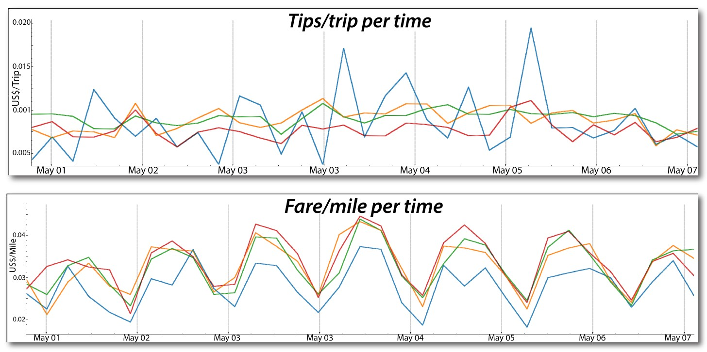 Fig. 9. Comparing tips per trip and fare per miles for trips originating in different neighborhoods in the period of 05/01/2011 - 05/07/2011.5.5 Rendering Considerations
The performance of the map view is also extremely important in delivering a good user experience. Thus, selecting a map rendering system with both flexibility and efficiency was a top priority in our design. Different options are available: (1) web-based engine provided by online map services such as Google Maps, Bing Maps or Open- StreetMap; (2) 2D desktop-based engines for rendering map tiles from OpenStreetMap such as KDE’s Marble. Since web-based rendering engines do not guarantee a consistent graphics acceleration across web browsers and hardware, it would hinder some of our visualizations such as the ability to build heat maps on the fly using Frame Buffer Objects or performing trip animations with OpenGL shaders. Moreover, effectively displaying a large amount of data with the web-based map API is still a major challenge including where to host the data and how to render them efficiently. On the other hand, though available systems in the option (2) solve the compatibility issue and data transfer, they only support a specific 2D rendering engine. For example, in the current KDE’s Marble, rendering has to be done through the QPainter object of Qt; OpenGL is not yet supported. Unfortunately, the use of OpenGL is required for many of our rendering layers. Our solution was a combination of (1) and (2): we embed a web browser as our bottom layer for rendering maps and place other native visualizations on top of it. In our application, we use Qt and promote the QGraphicsWebView as our embedded layer. This widget is placed inside an OpenGL canvas of a QGraphicsView widget, thus, making it possible for other layers to be compatible with both Qt’s QPainter and OpenGL native graphics. All geospatial transformations are done in a thin layer above the map view. It should be noted that the web-based component is only used for displaying maps, all other rendering is done in OpenGL to maximize the system performance.
6 CASE STUDIES
In this section, we present case studies that illustrate both the power and simplicity of our model and system.
6.1 Investigating Taxi Activity in Different Regions
While analyzing taxi service in a city, it is useful to compare different geographical areas. In TaxiVis, users can select regions at different levels of granularity: through free selection, by zip code, and neighborhoods. Fig. 8 shows the how pickups and dropoffs vary over a period of one week in four different areas. Here, we made use of grouping to analyze the behavior of combined neighborhoods. For example, we grouped East, West and Greenwich Village (shown in green) as well as Harlem and East Harlem (blue). By far, Midtown (orange) is where most activity happens during the week days, followed by the Upper East Side (red). During the weekends, the situation changes and we see greater activity in Downtown. Note the increase in the number of trips that starts to happen on Thursday (May 5), with big peak for pickups on Friday (May 6) in the evening—this indicates that the nightlife on weekends is very lively in Downtown.
This one-week overview provides an accurate overview of city life, where people go and when. It also highlights social inequalities. People who live in Harlem have long complained about the lack of taxi service in their neighborhood. The plot clearly shows that their discontent is well justified. There is over one order of magnitude difference in the number of trips to/from Harlem compared to other more affluent neighborhoods. The heat map also shows that while people take taxis to Harlem, there are barely any pickups there. Exploring other parameters associated with the trips we found one surprising fact: the tips per trip originating in Harlem are higher than for the other neighborhoods (see Fig. 9). Further analysis also showed that the fare per mile is lower for Harlem, and thus, there is less economic incentive for taxis to be in that area. The higher tips may be a means to reward drivers that go to Harlem.
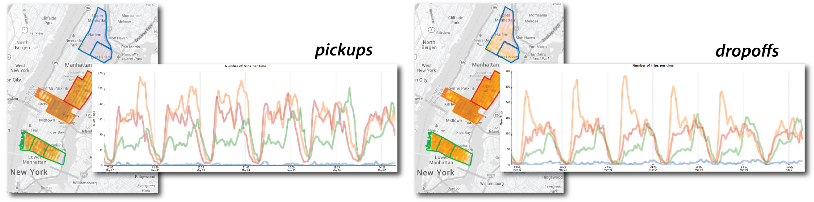 Fig. 8. Comparison of taxi pickups (left) and dropoff (right) in different neighborhoods over the first week of May 2011. The plots show that Midtown and the Upper East side are the most active areas. But over the weekend, there is an increased number of dropoffs in Downtown. The figure also highlights the fact the Harlem is underserved by taxis.6.2 Exploring Movement: Transportation Hubs
Airports and major train stations (i.e. Penn Station and Grand Central) are key transportation hubs in NYC. By analyzing taxi movement to and from these locations, we can obtain insights into how people move into and out of the city. To compare the number of trips originating at JFK and La Guardia, we select the regions in their vicinity and examine a 1-week period (05/01/2011 through 05/07/2011). As the plot in the top of Fig. 10 shows, there are more pickups at La Guardia than at JFK on most days. Another interesting question is where passengers go. The choropleth (Fig. 10 top) that highlights NYC neighborhoods, shows that most people go to Midtown (the darkest region), followed by the Upper West Side.
By hovering the mouse over a neighborhood, the system displays the exact number of trips ending in that neighborhood. We can also obtain more fine-grained information about the exact dropoff locations— the popular destinations, using a heat map.
In order to study the movement patterns for airports and train stations, we can group them (Fig. 10 bottom) . We select the regions around Penn Station and Grand Central, and group them using the Group/Ungroup button (note the two green outlines); we also group the trips that start at the airports (blue outline). Immediately, the plot is updated to show the number of pickups in the two regions. Note that there are many more pickups around the train stations. Another interesting observation is that the number of trips originating at the train stations remains roughly constant from Monday through Thursday, and starts to decrease on Friday, hitting a low on Saturday. This reflects the behavior of many commuters who go to the City during the week, but not on weekends. Note that, while in this example we have focused on pickups, i.e., people arriving, it is easy to also study dropoffs. Starting from the map view shown in Fig. 10, we can simply select the airport and train regions (by double-clicking on them), and then click on the “Dropoff” button.
Using the summary view, we can further explore features of the selected trips. For example, by examining the average cost of trip per mile, we can see that it is higher within Manhattan. This provides an incentive for taxi companies to stay within Manhattan and avoid trips to the airport. Note that while it is illegal for taxis to reject rides, this is a common practice when the destination is JFK. This problem is accentuated during rush hour on weekdays, when trips take much longer (see Fig. 1) and lead to a potential reduction in revenue.
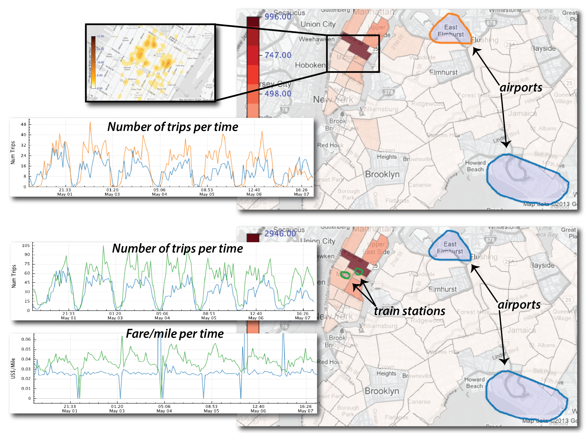 Fig. 10. Comparing movement across NYC transportation hubs. On the top, we examine trips starting at the two major airports in NYC: JFK and La Guardia. In the bottom, we refine the query to compare trips starting at the airports with trips starting at the train stations, Penn Station and Grand Central.6.3 Studying Behavior over Time
Taxi Demand Patterns. Studying how taxi demand varies over time can be useful to understand city dynamics. For taxi companies, this information can help in decision making, both to schedule driver shifts and maximize profits. To simplify the process of comparing multiple times slices, TaxiVis provides a time space exploration mechanism. The user first selects the time slices of interest. This can be done using the time selection widgets (Fig. 5). In the regular selection mode, the slices are selected by specifying a time range, a step size (e.g. an hour, a day, a week), and the number of steps. In the recurrent selection mode, the list of time ranges is already expressed and generated by the widget. For example, by selecting 2011, May and Sunday, 5 times ranges are returned–each corresponding to a Sunday in the month of May, 2011. Given a list of time ranges, the result of a time space exploration is a multi-view visualization displaying one map per time interval, and a data summary view that aggregates the results for the time intervals. Each map view and plot line is associated with a color assigned to its time range. This is illustrated in Fig. 11. Here, we examined all Mondays in May 2011 and May 2012. The number of trips for the two years is very similar, including the significant drop on Memorial Day. The latter indicates that the number of taxis on the streets could potentially be reduced on the holiday.
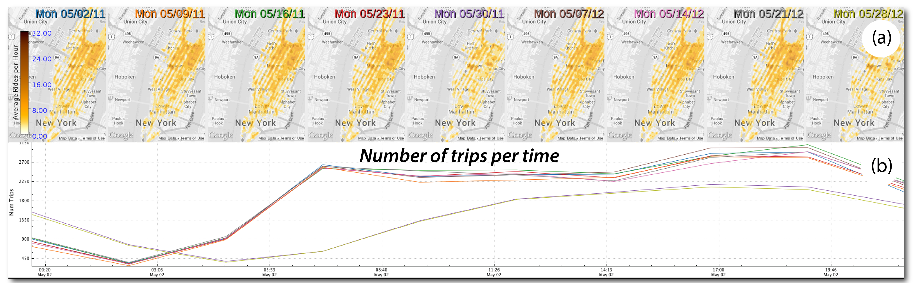 Fig. 11. Time exploration. (a) shows activity for all Mondays in May 2011 and May 2012. Two such Mondays stand out: 05/30/11 and 05/28/12. Examining the summary plot in (b), we see that the number of trips in these two days is significantly lower than the on other Mondays.Hurricanes Sandy and Irene. The taxi data can also give insights into the effects of major events. We used the time space exploration to study taxi activity during the the week of Hurricane Sandy. Fig. 12 shows the taxi trips starting on Sunday, the day before the hurricane, through Saturday. The heat maps closely reflect the extent of the disruption caused by this event. On Monday, the day the hurricane landed, there was a big drop in the number of trips throughout Manhattan. On Tuesday, life starts to get back to normal in most regions, except for Lower Manhattan, where there are virtually no taxis for five days. This area suffered a major power outage which was only restored on Saturday. We have also studied the period around Hurricane Irene (see Fig. 13). Note that although activity came back to normal sooner, on the day of the hurricane, there were virtually no cabs: there were only 1076 trips, while on average, there are 500,000. This seems to indicate that although shorter, Irene caused a bigger disruption in Manhattan.
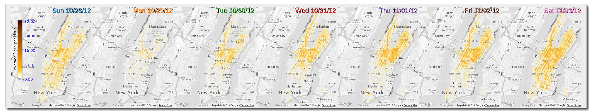 Fig. 12. Taxi activity in Manhattan during the week of Hurricane Sandy. On the day the hurricane hit, there are very few taxis on the streets throughout Manhattan. On the next four days, activity goes back to normal in all parts of the city, except in lower Manhattan, where there was a power outage which lasted for five days. 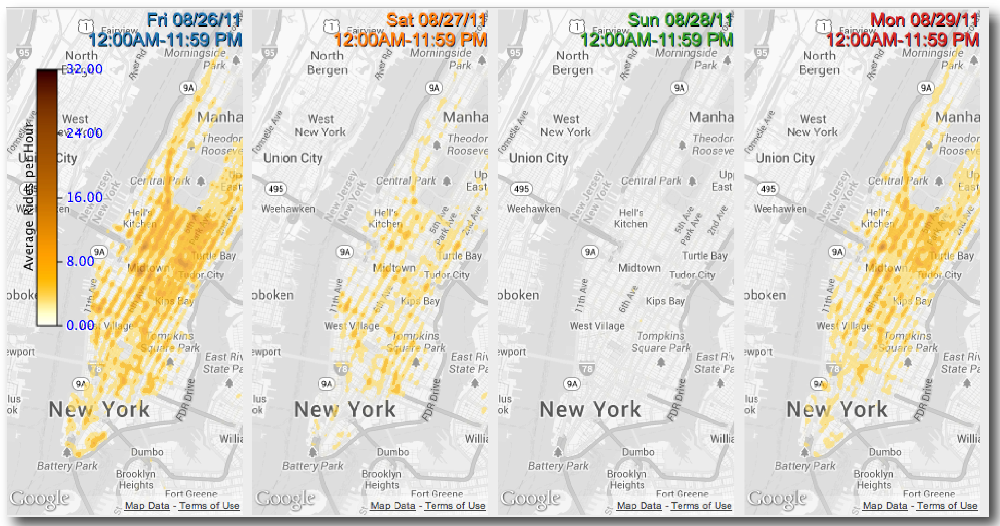 Fig. 13. Taxi activity in Manhattan during the week of Hurricane Irene.7 CONCLUSIONS
In this paper, we presented a new system that supports visual exploration of big origin-destination and spatio-temporal data. A key component of this system is a visual query model that allows users to quickly select data slices and explore them. We have shown that this model attains a good balance between simplicity and expressiveness. Another important contribution of this work is the system design, which not only combines the visual query model with other visualization primitives, but also addresses performance challenges that arise due to the scale of the data. In particular, to support interactivity, we designed an efficient storage manager as well as a rendering subsystem. We have present a series of case studies, using a large data set consisting of over 520 million taxi trips in NYC, which illustrates the capabilities and effectiveness of our system and design decisions.
There are several avenues for future work. Our system has been deployed to a few domain scientists in our institution and the feedback has been very positive. We would like to perform a larger usability study before making it widely available. While our visual query model is flexible, our first implementation has some limitations. For example, there are useful time constraints that cannot be expressed with the current time widgets. We plan to experiment with alternative and more flexible widgets both for time and attribute constraint specification. In addition, we would like to make the system be completely web-based, but given the system considerations outlined in Sec. 5, this is challenging due to the limitations of the existing technology. Our plan is to remove some of the features to allow for such a deployment, and add them back as browsers and their APIs get easier to use, more reliable, robust, and portable. We also plan to add support for other data sources, for instance, NYC will deploy in spring 2013, the largest bikeshare program in the world, and the bikes will be GPS-tracked with the information planned to be publicly available. Furthermore, our current system relies on user knowledge of the city to make inferences about the patterns on taxi data. We intend to add more context information about the city so the user is able to correlate the taxi data with, for example, information about the main business activities in the regions. Finally, we would like to add more data analysis capabilities to support more complex analyses.
ACKNOWLEDGMENTS
The authors thank the Taxi & Limousine Commission of New York City for providing the data used in this paper. We also thank Daniel Osmari and Wendel Silva for helping with the data preprocessing. This work was supported in part by the National Science Foundation (CNS-1229185, CNS-1153503, IIS 1139832, IIS-0905385, IIS- 1142013, AGS 0835821) and the Department of Energy.